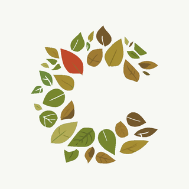
Chronicle
הבריאות שלך. הסיפור שלך.
תעדו תסמינים, שינה, תזונה ופעילות, גלו את הקשרים ביניהם ומה באמת משפיע עליכם. איננו מפעילים שרתים ואיננו מקבלים את הנתונים.
האפליקציה נמצאת בבדיקה ב-Google Play ואצל Apple. הקישורים יתווספו עם האישור.
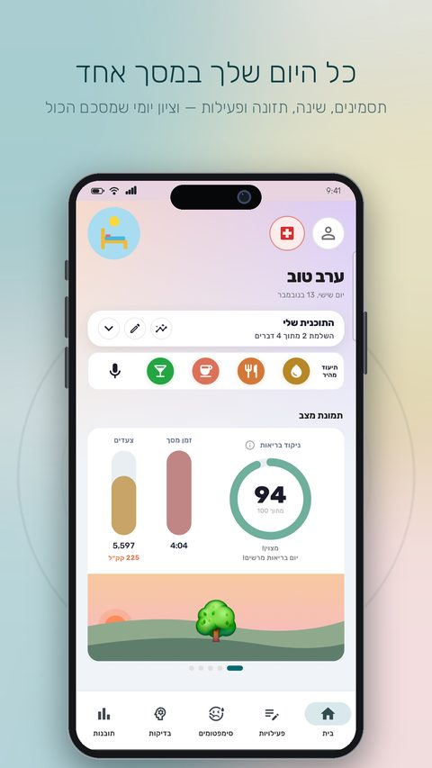
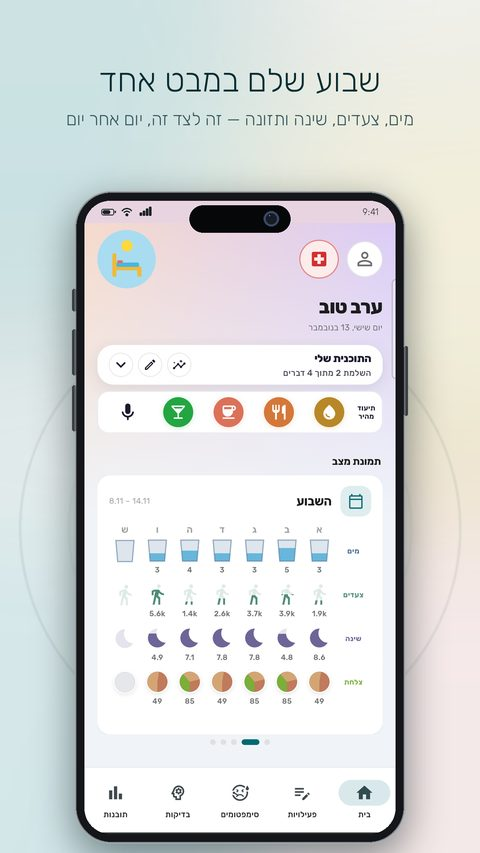
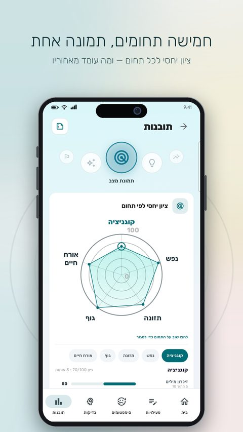
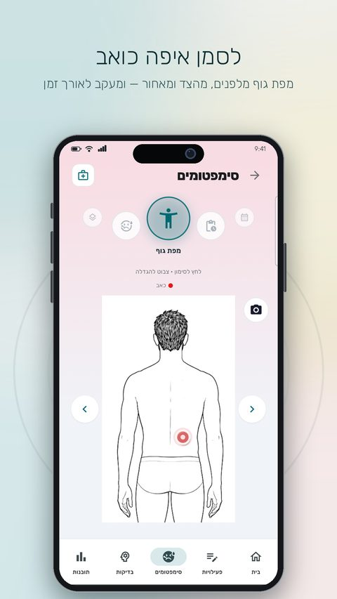

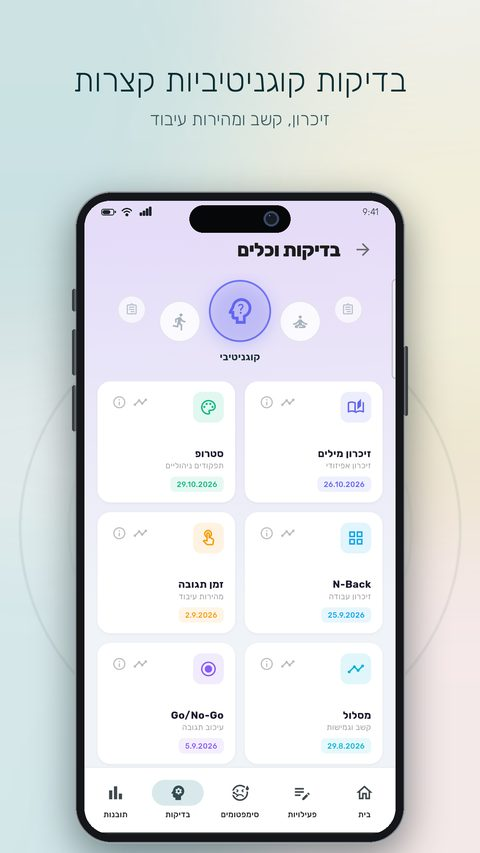
עושים בדיקת דם. מישהו קורא אותה, אולי משנה תרופה או ממליץ על שינוי, וקובע תור נוסף בעוד חצי שנה. מה שקורה באמצע נשאר עליכם, ואין שום דבר שעוקב אחרי זה. Chronicle נועדה לחצי השנה הזאת — התוצאה נשמרת לצד הקודמות, אפשר לראות מה המספר עשה לאורך הזמן, ויש תזכורת מתי הגיע הזמן למדוד שוב.
מה מתעדים
Chronicle מאפשרת לתעד לאורך זמן את מה שמשפיע על איך שאת/ה מרגיש/ה, ולראות את הקשרים ביניהם:
- סימפטומים, תסמינים, מצב רוח ושינה;
- תזונה, פעילות גופנית ותרופות;
- מדדים ביומטריים, בדיקות דם, שאלונים ומבחנים קוגניטיביים.
לא רק יומן
- סיכום לקראת תור אצל רופא/ה — בוחרים על אילו תסמינים התור, והאפליקציה בונה מהתיעוד סיכום מסודר: כל כמה זמן, באיזו עוצמה, לאיזה כיוון זה הולך, ולצד זה התרופות הנוכחיות והמדדים האחרונים.
- ייבוא בדיקות דם מקובץ PDF — הקובץ מקופת החולים נקרא במכשיר עצמו: שמות הבדיקות, התוצאות, טווחי הייחוס והתאריכים נשמרים כמדדים שאפשר לעקוב אחריהם, בלי להקליד שורה אחת.
- קריאה משעון חכם — צעדים, דופק, שינה ואימונים, דרך Health Connect.
- תיעוד קולי וסריקת ברקוד — במקום להקליד.
- ניסוי אישי — לבדוק אם שינוי אחד באמת משנה משהו אצלך, ולראות מה יצא.
- מרכז ידע — כ-290 ערכים בריאותיים, מבדיקות מעבדה ועד שינה, תזונה ובריאות הנפש: מה זה, למה זה משנה, מה משפיע על זה ואילו אמונות נפוצות פשוט אינן נכונות. כל הערכים מבוססים על מקורות רפואיים מוכרים.
- מדיטציות מודרכות — תשעה תרגולים מוקלטים, ותרגילי נשימה מודרכים.
- תובנות ודוחות תקופתיים — מבוססים על מה שתיעדת.
הפרטיות קודמת לכול
אין שרתים, אין חשבונות משתמש, אין פרסום, אין אנליטיקה ואין כלי מעקב. המידע נשמר מקומית במכשיר. אם גיבוי מערכת ההפעלה פעיל, עותק נשמר בחשבון הענן הפרטי שלך — לא אצלנו, ואיננו מקבלים ממנו דבר.
Chronicle היא כלי מידע ורווחה. היא אינה מכשיר רפואי ואינה מהווה ייעוץ, אבחון או טיפול רפואי. בכל שאלה רפואית יש לפנות לאיש מקצוע.
Chronicle
Your Health. Your Story.
Track symptoms, sleep, food and activity, see the patterns between them, and what makes a difference for you. We run no servers and never receive your data.
The app is in review with Google Play and with Apple. The links go up on approval.
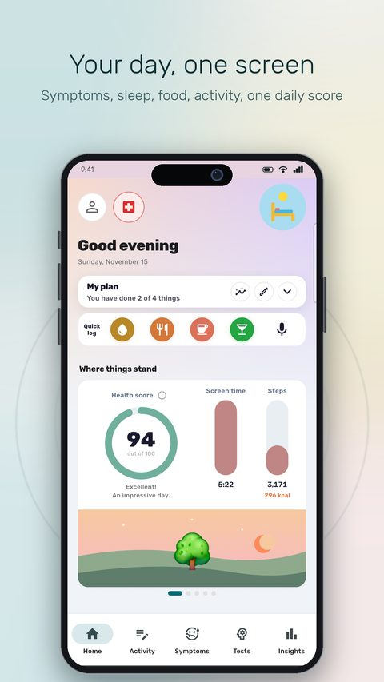
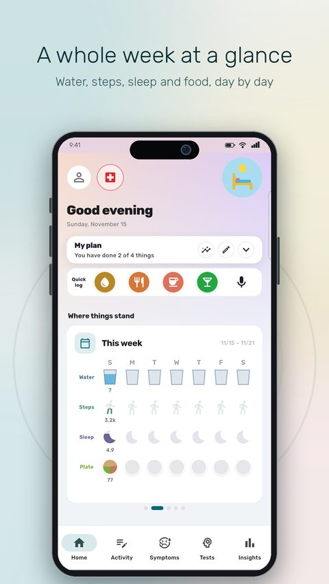
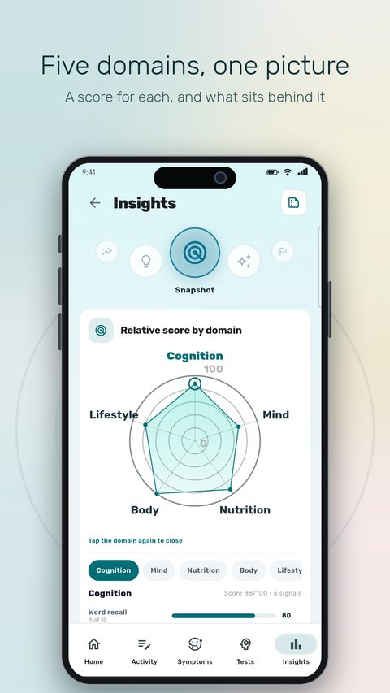
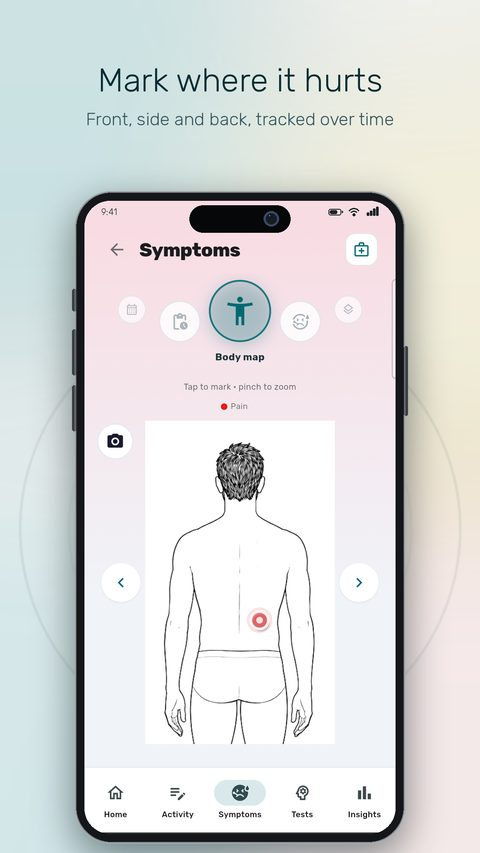
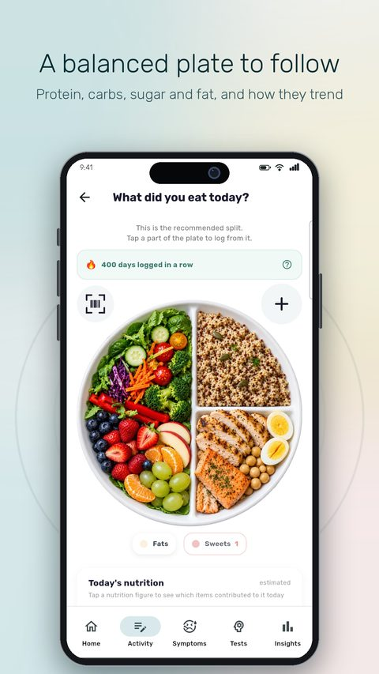
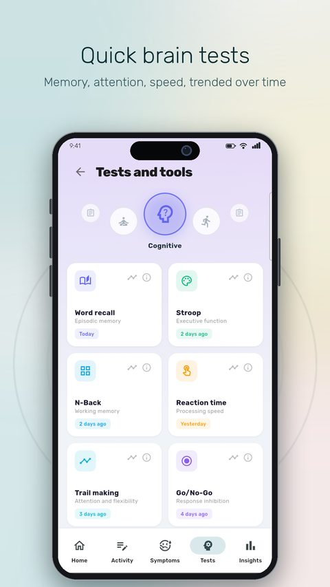
You have a blood test. Someone reads it, maybe changes a medication or suggests a change, and books you in again in six months. What happens in between is yours to manage, and nothing is keeping track of it. Chronicle is for those six months — the result sits beside the earlier ones, you can see what the number has been doing, and it reminds you when it is time to measure again.
What you record
Chronicle lets you record what affects how you feel, over time, and see how those things relate to each other:
- symptoms, mood and sleep;
- nutrition, exercise and medications;
- biometrics, blood-test results, questionnaires and cognitive tests.
Not just a diary
- A summary for a doctor's appointment — pick which symptoms the visit is about and the app builds a structured recap from what you logged: how often, how severe, which way it is heading, alongside your current medications and latest readings.
- Blood-test import from a PDF — your health fund's file is read on the device itself: test names, results, reference ranges and dates become measures you can follow, without typing a single line.
- Readings from a smartwatch — steps, heart rate, sleep and workouts, through Health Connect.
- Voice notes and barcode scanning — instead of typing it in.
- Personal experiment — test whether one change actually makes a difference for you, and see what came of it.
- Knowledge centre — around 290 health entries, from lab tests to sleep, nutrition and mental health: what it is, why it matters, what affects it, and which common beliefs about it are simply wrong. Every entry is built on recognised medical sources.
- Guided meditations — nine recorded practices, and guided breathing exercises.
- Insights and periodic reports — built from what you recorded.
Privacy comes first
No servers, no user accounts, no ads, no analytics, no trackers. Everything is stored locally on the device. If your operating system's backup is on, a copy also sits in your own cloud account — not ours, and we receive nothing from it.
Chronicle is an information and wellbeing tool. It is not a medical device and does not provide medical advice, diagnosis or treatment.